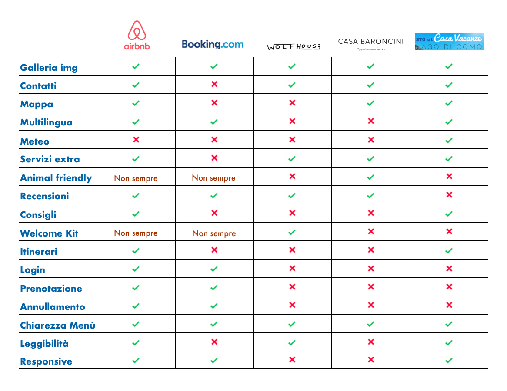
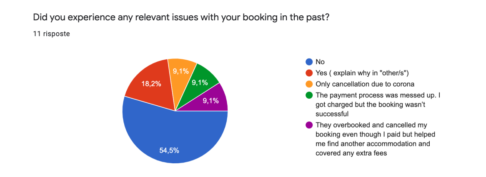
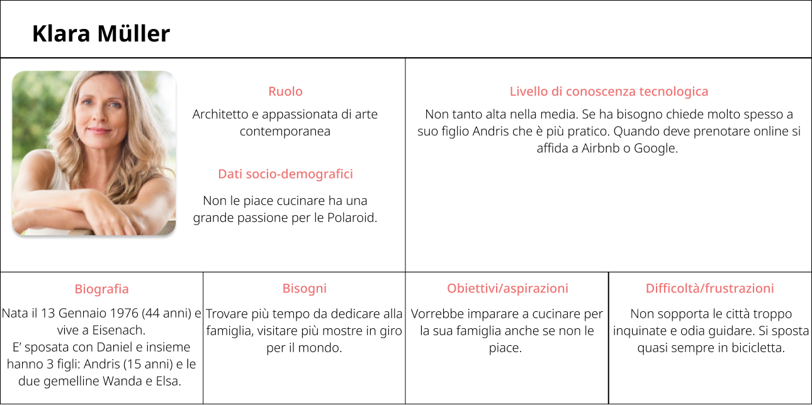
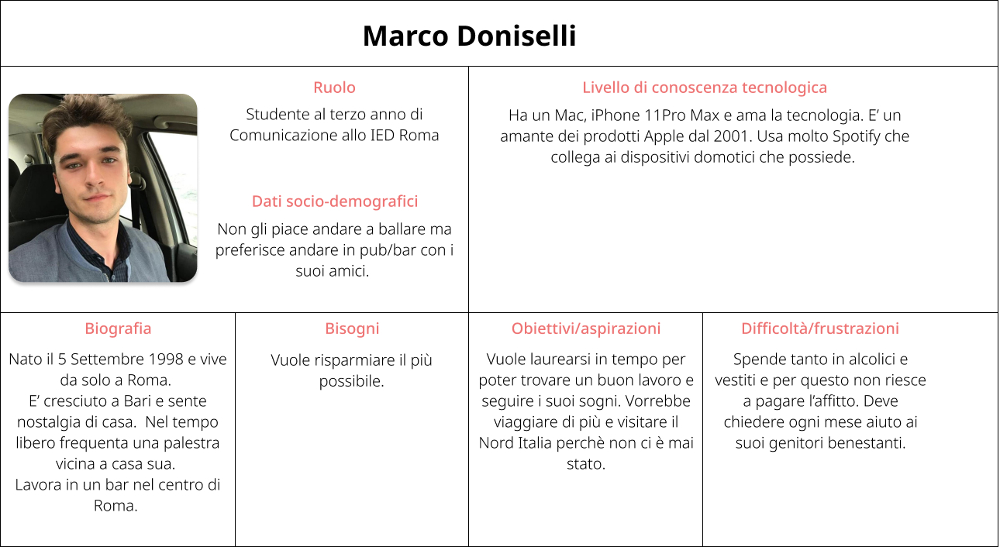
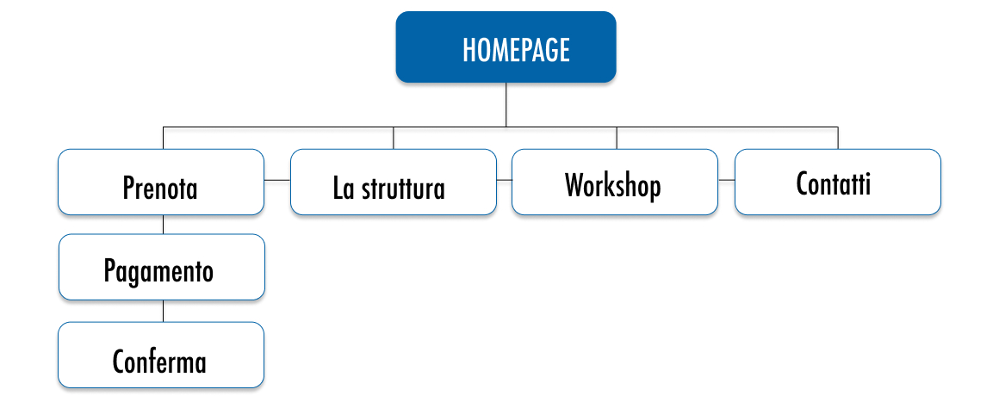
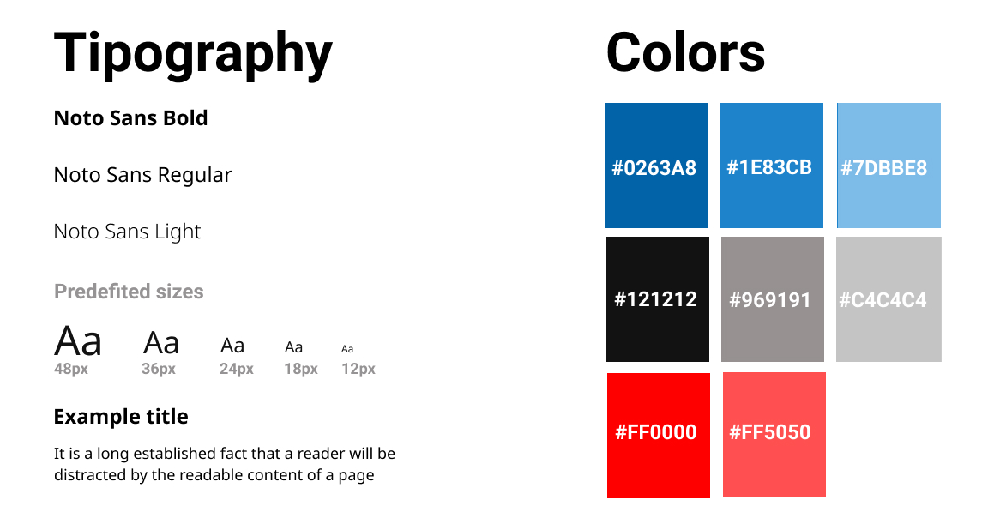
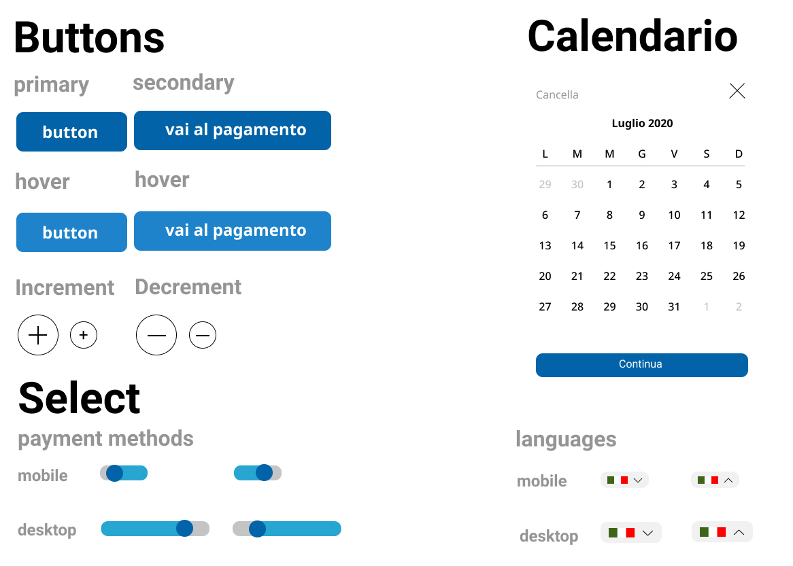

Casa Blu UX / UI Case study
Description
I made this project as the final project of the Mohole School course with the hope that one day it will become reality. Hytta is an online platform for booking outdoor activities and renting sports equipment.
Brief
Casa Blu is a holiday home opened in 2016 on Lake Como, managed by Chiara and Tommaso, a 32-year-old couple of photographers and videomakers. The house is located in an ancient village, a quiet area and an ideal base for visiting various places in the area. The spaces are designed to accommodate a family and groups of friends (max 6 people). The house is suitable for children and babies, with a playroom to let children develop their creativity on their own.
Business goals
- Relaunch tourism by rediscovering Italian beauties, starting with Italian people.
- Increase off-season bookings with promotions
- Move bookings to the new site in the first year by 20%.
- Give visibility to the extra services available
Benchmark
The next step of my process was to develop the navigation system by organizing the site map in a clear and simple layout. I created the overall structure of the website based on the information I gathered in the previous steps.
Definition of possible problems for users
- Failing to finalize the transaction / booking.
- Landing on other sites instead of ours.
- Not being able to browse the website.
- Be distracted by external factors and therefore be little concentrated in navigation.
Target definition and research
The next step of my process was to develop the navigation system by organizing the site map in a clear and simple layout. I created the overall structure of the website based on the information I gathered in the previous steps.
User Personas
The next step of my process was to develop the navigation system by organizing the site map in a clear and simple layout. I created the overall structure of the website based on the information I gathered in the previous steps.
 Sitemap
The next step of my process was to develop the navigation system by organizing the site map in a clear and simple layout. I created the overall structure of the website based on the information I gathered in the previous steps.
Typography & Colors
The next step of my process was to develop the navigation system by organizing the site map in a clear and simple layout. I created the overall structure of the website based on the information I gathered in the previous steps.
Atomic Design
The next step of my process was to develop the navigation system by organizing the site map in a clear and simple layout. I created the overall structure of the website based on the information I gathered in the previous steps.
